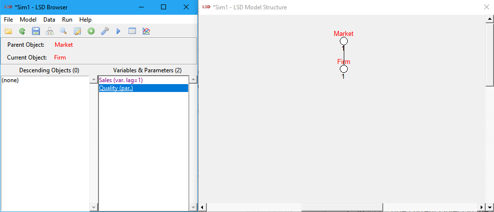

Writing a LSD Model
This is a step-by-step tutorial to create a simple LSD simulation model. Modelers are invited to follow the LMM Primer, for an introduction to LSD, and the user tutorial, on using existing LSD models, before trying this tutorial.
A LSD model is composed by:
· Equations for Variables: chunks of basic programming code for each Variable in the model, much like the definition of a difference equation in terms of a mathematical expression.
· A model structure: a hierarchical collection of interconnected entities called Objects. Each Object may contain Variables, Parameters or other descending (son) Objects.
· A model configuration: the initialization data required to run the simulation, like the initial values for Parameters and Variables and the number of Object instances at the beginning of the simulation run and much more (e.g., number of time steps, data to save).
All the model elements are contained in two types of files: the equation file (.cpp extension), holding the Equations code, and the configuration file(s) (.lsd extension), where the other elements are stored. There is typically one equation file and one or more configuration files per LSD model.
Therefore, creating a LSD model means to write the code for the Equations in the equation file (using LMM) and to generate the model structure and configuration in a configuration file (using the LSD Browser). The tutorial steps listed below are a guide to create these files and more. Try following the list when creating your first model by clicking on the Operation name for the detailed instructions at each step.
|
Operation |
Window |
Objective |
|
Paper and |
Decide about the few difference equations for a prototype of the model and the entities to be represented. Sketch out the kind of results to investigate. |
|
|
Generate an “empty” model by selecting menu option File>New Model (LMM manual on this). Create the home directory and support files for the model and an equation file with no code. |
||
|
Open the equation file using command Model>Show Equations (or click the C++ page icon) and add the Equations associated with the model’s Variables (LSD Equation coding guide). Each Equation is inserted independently, much like a set of difference equations. The programming knowledge required is usually limited to the logical/mathematical operations represented in the Equation. |
||
|
Try to generate the LSD model program using menu option Model>Compile and Run (or click on the second yellow lightning icon, the one with the green arrow) and, if errors occur, check the list of coding errors (LMM manual on this). LMM attempts to create a model program by compiling the equation file. In case of syntactical errors in the Equations' code LMM provides their list and location in the equation file. |
||
|
Change the Equations’ code to prevent the errors (suggestions for fixing common errors) using the Go to Error button in the Compilation Errors window. Using the list of errors provided after a failed compilation it is recommended to fix one error at a time, staring from the first one. Frequently a single coding mistake produces more than one error so recompiling after each fix is usually the best approach. Note that errors are listed along line and column numbers referring to the file and location where they occurred. LMM offers the option to directly jump to each error location. |
||
|
Run the fixed LSD model program to open the main LSD Browser interface using again the command Model>Compile and Run (or click on the second yellow lightning icon, the one with the green arrow) (LMM manual on this). LMM launches the LSD model program and opens the LSD Browser window. This is the main interface to create the model configuration and to execute the simulation runs. |
||
|
Generate the model configuration using the LSD Browser Model menu options (LSD manual on this). To define a model structure the modeler needs only to define its relative position in the inverted tree hierarchy and type in the names and lags (if any) of the model elements (Objects, Variables, Parameters). For a discussion on how to design the model structure, see here. |
||
|
LSD Browser |
Edit the model configuration using the LSD Browser Data menu options Number of Objects (or click the white on green plus icon) and Initial Data (or click the spreadsheet with a pencil icon) (LSD manual on this). First, adjust the desired number of instances for each Object type requiring more than one instance (the default). Next, fill in the required numerical values to the initialization of Parameters and lagged Variables. |
|
|
Edit the respective elements configuration using the LSD Browser Model>Change Element menu (or use the context menu by right clicking on its name on the Variables and Parameters list box) (LSD manual on this). For the chosen element it is possible to decide whether it shall be included in the data saved for analysis or to appear in the run-time plot. |
||
|
Change the default simulation settings using the menu option Run>Simulation Settings (or click the wrench icon) (LSD manual on this). Although provided by default, the modeler may want to determine the number of time steps per simulation run, the values to be saved, the series to be shown during the run, and other technical settings. |
||
|
LSD Browser |
Use the command Run>Run (or click on the blue triangle/play icon) to run the simulation (LSD manual on this). Check first if there are logical errors in the model, that is, code that cannot be executed given the state of the model in any given time step. Errors are presented in dialog boxes and detailed in the LSD Log window. Examples of logical errors are deadlocks (two Equations requesting reciprocally to be computed one before the other), or missing elements of the model (usually due to differences in spelling between the Equation code and structure labels). See common errors and fixes here. |
|
|
Correct the offending code in the respective Equations until the model can be compiled and the simulation run, completed. In most cases the error messages issued by LSD allow to quickly find the Equation's code causing. See common errors and fixes here. |
||
|
When the simulation run successfully finishes, open the LSD Analysis of Results window to check the results using the menu Data>Analysis of Results (or click in the plot icon) (LSD manual on this). The list of time series saved during the simulation are loaded in the LSD Analysis of Result window to produce plots, gather statistics, export data, etc. Check if the obtained results are in line with the expected ones and, if not, use the available data to understand any discrepancy. If a problem is detected, maybe a revision of the Equations, the model structure or the initialization data is required. |
||
|
Produce different model configuration files by saving them under different meaningful names using the File>Save As command (LSD manual on this). Starting from a fresh existing model configuration, change the initial values of the relevant elements or the simulation settings to test the model behavior under different conditions (see how to change initial values and how to modify simulation settings). |
||
|
Create a HTML file reporting the model structure and the interdependencies between model elements using the menu Model>Create Model Report (information on this). The report is extremely useful to understand the actual computations of a model and the inter-relations among its elements. |
||
|
LMM |
Add new elements to the model, inserting also the Equations for the new Variables (LSD Equation coding guide). Every time a new Equation is added to the model, the LSD model program needs to be recompiled in LMM. |
The LSD models you create may be distributed to any LSD user by just sending the model home directory (where the model’s files are contained). The user will have all the required files to repeat your simulation, understand it and, possibly, extend the model.
|
▲Top |
The design of a model must start with the simplest structure, to be gradually expanded, exploring the possibility of LSD to indifferently use Parameters or Variables in the code of Equations. This way, the modeler can start the model with few Variables and several Parameters and gradually transform (“endogeneize”) Parameters into Variables. Such transformation can be done by simply adding an Equation (and controlling for any error) to the new Variables, without affecting existing parts of the model even when these are connected to the new code.
Let's consider a model where a group of firms compete on a market on the basis of the quality of their product. The driving equation is, for each firm:
Salest = Salest -1 [ 1 + a ( Quality / AverageQualityt -1 – 1) ]
That is, the sales of each firm remain constant if the quality of its product is identical to the average, or changes of a percentage points in respect to the ratio of its quality over the average quality.
The equation for the average quality must obviously be:
AverageQualityt = ∑i ( Qualityi,t * Salesi,t / TotalSalest )
With:
TotalSalest = ∑i ( Salesi,t )
Note that in the first equation for Sales we use AverageQuality at time t – 1. This is to avoid a deadlock. This would happen if the equation for Sales required the most recent value of AverageQuality, which in turn requires Sales which cannot be computed.
Concerning the structure of the model, we decide to use several firm Objects, calling them Firm, containing the values for Sales and Quality. The data common to every firm (a, TotalSales and AverageQuality) will, instead, be placed in a single Object (say Market) containing the Firm Objects.
|
▲Top |
To open LMM, double-click LSD (LMM) icon in the desktop. The LSD (LMM) icons should have been created during the LSD installation. If the icon was deleted (or otherwise is not available), you may (re)create it following the instructions contained in Readme.txt for your operating system (Windows, Linux or macOS). Alternatively, you may also invoke LMM from the file explorer program by double-clicking the appropriate file in the LSD installation directory (Windows: run.bat or run64.bat, Linux: lmm or lmm32, macOS: lmm[.app] or lmmOSX) or running it from a command prompt or terminal window.
In LMM choose menu option File>New Model. Type a name (e.g., “My model”), a version number and the (non-existing) home directory name (no spaces allowed) where to store the model files. The obvious requirement is that there is no other model home directory with the same name. The models base directory, where model home directories are created, is by default named “Work” and it is located inside the LSD installation directory.
You are now asked if you want to create a text description for your model (you can also create it later). For now just press No. You should be presented to the equation file for a new model called “My model”. The equation file is endowed with all the technical requirements for the equation file in the LSD model program. You need to fill in the Equations for your model (exclusively in between the two lines MODELBEGIN and MODELEND). From now on, all the operations in LMM menu Model (e.g. run, debug, show equation file etc.) will be referred to this model.
|
▲Top |
This operation is at the core of the model creation, since it tells the simulation program how each Variable should produce a new numerical value at each time step. You can copy the code for the Equations presented here (the line formatted like this) or type it manually. Ignore the text coloring, which do not have any influence on the actual working of the code. Yet, consider that LMM offers guided shortcuts to insert the most frequently used LSD commands (right click to open the context menu and choose LSD Macro). See the LMM manual for details.
Let's use this structure to write the type in the equation the code for the Variable Sales (you can select the following text for the equations, copy it with the menu Edit>Copy (or Ctrl+c) in the browser and then paste it in LMM using Edit>Paste (or Ctrl+v). The equation code for Sales is:
EQUATION("Sales")
/*
Level of sales:
Sales[t]=Sales[t-1]*{1+a*(Quality/AverageQuality-1)}
The sales of a
firm are adjusted in respect of the ratio between firm's own Quality and the
average quality.
*/
v[0]=V("a");
v[1]=VL("Sales",1);
v[2]=V("Quality");
v[3]=VL("AverageQuality",1);
RESULT( v[1]*(1+v[0]*(v[2]/v[3]-1)) )
Let's see what the Equation does. The first line indicates that this code is the Equation for the Variable Sales. Then we have a comment (between the ‘/*’ and ‘*/’ marks), without any relevance for the working of the Equation, but helpful for documentation (this comment can be automatically searched by the system and used in the model documentation).
The next 4 lines in the Equation collect the data necessary to compute the value of Sales. The v[0], v[1], etc. are temporary C++ variables used to store non-persistent intermediate results during computation. The LSD macro V("label") simply returns the value of the model element named label. The VL("label", lag ) macro is similar to V("label"), but request the past value of the lagged Variable named label, with lag (a positive integer) lags.
In our example, in v[1] it is stored the value of the previous time step value of Sales. The last line contains the result for the Equation, that is, the numerical value that Sales will take after its Equation has been computed.
Note that V("label")works identically whether the value searched is a Parameter (like a) or a Variable. Moreover, the Equation’s computation is identical for Variable Sales stored in different Object instances. In fact, Sales is a Variable contained in an Object referring to firms, while Variable AverageQuality is located in another Object, Market.
Now we move to the other Equations. Place the cursor after the last line or before the first line of the Equation for Sales (the order of Equations in the equation file is irrelevant). The proposed Equation for TotalSales is:
EQUATION("TotalSales")
/*
Sum of the Sales from each Firm
*/
RESULT( SUM("Sales") )
The last Equation, for AverageQuality, is similar to the previous one:
EQUATION("AverageQuality")
/*
Average quality of products, weighted with the sales.
The equation scans all the Object Firm summing up the product Sales x Quality
and dividing for
the total sales.
*/
v[0]=V("TotalSales");
v[1]=0;
CYCLE(cur, "Firm")
{
//assign to pointer 'cur' all the Firm
v[2]=VS(cur,"Sales"); //compute Sales for the current Firm
v[3]=VS(cur,"Quality"); //compute Quality for the current Firm
v[1]=v[1]+v[2]*v[3]; //cumulate
the product Sales times Quality
}
RESULT( v[1]/v[0] )
This Equation deserves some attention. Firstly, we store in v[0] the value of total sales. Then, we initialize v[1] to 0. The next lines contain a CYCLE command so that the temporary pointer named cur (that is, a temporary variable containing Objects instead of numerical values) cyclically scans all the instances of the Object named Firm. The CYCLE repeats the commands between the “{“ and “}” marks, passing by all the Firm Object instances in the model. In each CYCLE three operations are performed: collect the value of Sales and Quality for the firm indicated by the pointer and add their product to v[1].
Note that we use the LSD macro VS(pointer, "label"). This function retrieves the value of a specific instance (copy) of the Object named label pointed by pointer, instead of generically search for any one instance of this Object in the model.
Now you have entered all the required Equations for your model. For more information, please refer to the LSD macro language reference.
|
▲Top |
First, save the equation file in LMM (menu File>Save or click the floppy disk icon).
Now you need to create the LSD model program. Select the menu item Model>Compile and Run (or click on the second yellow lightning icon, the one with the green arrow). LMM automatically (re) compiles all the required LSD modules including the equation file. If no errors are found, the LSD Browser for the model is launched. Failure to compile is more frequently associated with errors in the model’s code but sometimes is due to a wrong LSD configuration (to be sure, reset your system configurations using the command Model>System Options, and clicking on the button Default XXX appropriate to your computer type).
|
▲Top |
When compiling the LSD model program, the system controls that the commands written in the equation file are legal C++ code using valid LSD macro or functions. If the compilation fails, LMM opens a new window containing the list of errors. Errors are presented when the compiler cannot interpret or disambiguate a command in the equation file. It may be caused by several situations, like invalid syntax, typos, undeclared variables, etc. Check here the most common errors and possible fixes.
When LMM presents a compiler error it also offers the possibility to directly jump to the file and position where the compiler found the error (use the Go to Error button). Note that this error may have occurred before this point (usually not by much) but never after it. Please try to read the message(s) presented in the errors window in the order they are shown to facilitate understanding the origin of the problem (it is common that a single error originates more than one message). Note that you can always reopen the last errors list choosing the menu item Model>Show Compilation Results in LMM.
|
▲Top |
If the compilation succeeds, LSD automatically opens the LSD Browser window.
When the LSD Browser starts it is “empty”. That is, there is no model configuration (although the program contains the Equations' code already embedded). The basic LSD interface is composed by two windows, the LSD Browser and the LSD Log.
The LSD Browser shows an Object named Root as containing no elements. The LSD Browser is thought as a control center to issue commands to LSD and to inspect the model configuration details, like an Object properties. The LSD Browser is always pointed to an (current) Object, as indicated in the information bar, and lists its contained Variables, Parameters and descending (son) Objects. It is possible to explore the model with the LSD Browser, which shows one single Object's content at a time. The information bar presents the current Object and its parent and two list boxes: the descending (son) Objects, at the left, and the Variables and Parameters, at the right. Variables (var.) are indicated with a number (lag=x) of lagged values (used in the model for computations involving this Variable) and Parameters (par.). Any element in the Browser can be double clicked to set their options and see their documentation (see below). The context menu (right click) for each element is also available for quick changing most settings. The current Object in the Browser can be changed to another one by double-clicking the desired (son) descendant (to go down in the hierarchy tree) or on the name of its parent (to go up). You can also use the arrow keys, Enter and Backspace (as in a file browser) to move along Objects, Variables and Parameters.
The Log window shows messages from LSD when necessary. For the moment you can ignore it.
The Browser contains several menus. Modelers are interested mainly in menu Model, used to determine the model structure, while the other menus are used to manage different aspects of the simulation that also users may be interested in changing (like initial values, number of time steps, etc.). The structure of the model and the remaining settings are saved in configurations files (extension .lsd) which can be loaded to directly execute a simulation run.
|
▲Top |
To proceed with our example, the model structure we want to create is a Market Object containing several instances of Object Firm. In particular, we want the (fixed) Object Root to contain an Object Market, which in turns contain an Object Firm (for the moment we ignore the quantitative aspects of the model, like how many firms). In Market and Firm we need yet to define the required Variables and Parameters.
The model structure is always presented in LSD with respect to the current Object shown in the LSD Browser. Considering this, follow the steps below to build the desired model structure:
1. Choose the menu item Model>Add Descending Object (or press Ctrl+D) to add an son Object to Root. Type the name Market and press OK (you may also add a description, but for the moment just leave the text box empty). Now the Browser shows Market in the list of descendants. Notice that a new window has appeared, named LSD Model Structure. This is a graphical representation of the model (ignoring Root).
2. Double click on Market to move the Browser to show Object Market. If you typed the wrong label instead of Market you can right-click on its name and choose Rename in the context menu.
3. Market is created with no contained Variable or Parameter. We need Market to contain one Parameter, a, and two Variables, TotalSales and AverageQuality. Make sure Market is still the current Object, choose the command Menu>Add Parameter and type the name a. Next, insert the Variable TotalSales by using menu item Model>Add Variable and writing the name. Finally, when adding the Variable AverageQuality, remember to set to 1 the maximum lags. This is because we use AverageQuality with lag 1 (t – 1) in the Equation for Sales. Notice that the Browser window will list in the Variables list box the elements added.
4. Create now the Object Firm, as descending from (son of) Market by choosing Menu>Add Descending Object and set Firm as the name. The Browser will now list Firm as descending from Market. Double-click on Firm to move the Browser to it. Notice that the LSD Model Structure window has been updated to show Market as containing Firm.
5. In Firm (the current Object in the LSD Browser), use the same process (Model>Add Variable or Model>Add Parameter) to create the Variable Sales (it needs one lag) and the Parameter Quality.
6. Check that the LSD windows look like these (the order of Variables and Parameters does not matter):

7. The list box shows the names of Parameters followed by (par.), and of Variables by (var. lag=X), being the integer X the maximum number of lagged values used during Equations computation.
8. If you made a mistake inserting an element, double-click on the wrong element (or right click it for the context menu quick actions). You are shown the list of options for the element, including renaming or changing the number of lags (Properties) and removing it (Delete).
9. The order in which the items appear in the Variables' list of an Object is usually not relevant (it follows the order of insertion, by default) and can be changed using Ctrl plus the up and down arrow keys on the element to move.
Now the model structure is complete. It may still contain few mistakes: these can be corrected later, if the simulation manager issue errors. Save the configuration using menu File>Save.
|
▲Top |
The model structure is still not sufficient to run a simulation: we created so far only the general structure, but the model needs to also specify the initial values to be used for the Parameters and for the lagged Variables during the initial time steps of the simulation run. Additionally, the initial values required depend also on the number of Object instances in the model. After Objects are created, by default there is only one instance of each.
In our example, set the current Object to Firm and select Data>Number of Objects (or click the white on green plus icon or simply press Ctrl+O). Alternatively, in the LSD Model Structure, right click directly on the target Object and select Number of Objects in the context menu. After selection this command, a new window opens, prompting you about the details on the desired change. Update the Number of instances field to 10. Now, move the LSD Browser to the Object Market and try to increase its number of instances to 3. In the LSD Model Structure window you should see three groups of the Object Firm instances, represented only by three numerals “10”, one for each market. Lastly, restore to one the number of instances of Market. Notice that when removing Object instances LSD offers you to choose the specific instance(s) to delete, or simply eliminate the last one(s) created.
Now we have our model structure configured with one instance of Object Market containing 10 instances of Object Firm. To run the simulation we still need to set the numerical initial values for the Parameters and lagged Variables. While setting the number of Object instances can be done for the whole model at once, the configuration of the initial values must be done for each Object instance at a time.
In the LSD Browser, make the Object Firm, which contains the Parameter Quality and the lagged Variable Sales, the current one. Next, select Data>Initial Values in the menu (or click the spreadsheet with a pencil icon or simply press Ctrl+I). Alternatively, in the LSD Model Structure, right click directly on the target Object and select Initial Values in the context menu. Now, the LSD Initial Values Editor window opens and you may edit the initial values for all Parameters and lagged Variables contained in the current Object. Note that the hierarchical structure of the LSD models requires the usage of indexing to identify the Object instance containing the elements requiring initial values, so the first (brother) Firm is the instance numbered 1, the second, 2 and so on. This way the user can set different initial values for the same Parameter or lagged Variable across different (brother) Object instances.
In the LSD Initial Values Editor, you can manually type in each cell a (real) number (press Enter on the keyboard to move to the next cell). If the values to be used for the instances follow any specific rule for the assignment, you may use the Set All button to set the values for all or groups of them (see more details on the LSD manual). For the Object Firm we need to set the lagged values of Sales and the level of Quality. Set the same initial value for Sales for all firms (say, 100) using the Set All button, type 100 and select Equal to as the initialization method. For Quality, set increasing values from 1 in 0.1 increments (1.1, 1.2, …) by selecting the Increasing method and typing 1 as the start value and 0.1 as step.
Click on Done when you have finished setting the initial values for the Object type Firm and, move the LSD Browser to show the Market as the current Object (you may simply click on the label Market in the information bar on the left of the text “Parent Object”). Next, choose again Data>Initial Values in the menu (or click the spreadsheet with a pencil icon or simply press Ctrl+I). Enter 0.05 for the Parameter a value and 1.5 for the Variable AverageQuality first lag. Notice that TotalSales does not show in the LSD Initial Values Editor window as this Variable does not require an initial value because its lagged value is not used in the Equations.
|
▲Top |
By default LSD do not save the data produced during a simulation, so you need to specify the data (time) series you want to observe after the simulation run. Let's save the series for AverageQuality and TotalSales in Market, and Sales in Firm.
Make the Object Market the current one in the LSD Browser, if not already there, and double click the Variable TotalSales. This will open the Change Element dialog window, from where you can edit or modify any property of a Variable or Parameter. Mark the Save checkbox to have this Variable included in the data saved for analysis. Repeat the same procedure for the variable AverageQuality, but this time also marking the Debug checkbox, so we can trigger the LSD Debugger, interrupting the simulation run immediately after the computation of the associated Equation.
Now move the LSD Browser to the Firm Object and double click Variable Sales. In the Change Element windows, mark the Save and also the Run-time plot checkboxes, so the data for it is not just saved but also presented during the simulation run in the LSD Run-time Plot window.
These choices can also be changed quickly by means of the context menu by right clicking on its name on the Variables and Parameters list box in the LSD Browser. See the LSD manual for details on these and the remaining element configuration options.
|
▲Top |
Our example model is now potentially ready to be executed as a simulation run, once it contains the Equations, the model structure and the initial values, and the data to be saved is configured.
By default, LSD runs the simulation for 100 time steps. To change this and other run-time settings, use the menu option Run>Simulation Settings (or click the wrench icon or simply press Ctrl+M). For our example, in the field labelled Simulation steps type 2000 and keep the remaining fields at the default values.
In the Simulation Settings dialog window you may choose not just the number of time steps per simulation but also the seed for the pseudorandom number generator and number of simulation exercises to be run in a sequence. Sequential simulation runs use the same model configuration except for a different random generator seed (increased by 1 each turn). Running more than one sequential simulation runs cause LSD to automatically save the results data to files. See the LSD manual for more information on these and some further advanced simulation settings available.
Now, the model configuration to run the simulation is complete. As a good practice, save the configuration to a named model configuration file (.lsd extension) by choosing menu item File>Save As, and typing a name for the configuration, for example trial1 (you do not have to type the .lsd extension). You may check the name of the current configuration at the title bar of all LSD main windows.
|
▲Top |
Select menu command Run>Run (or click on the blue triangle/play icon or simply press Ctrl+R) to run the simulation. If there are no unsaved model configuration changes, the simulation will start, in our example, showing the LSD Run-time Plot window which presents the Variable Sales time series being produced. If there are multiple simulation runs configured or unsaved data, LSD issues a confirmation message, telling how the results data will be handled and/or confirming the saving of any unsaved configuration change.
A simulation run consists in several time steps, during each of which all the Variables of the model are updated, using the associated Equations to compute the new values. During the simulation run, some Variables time series may be plotted in the LSD Runt-time Plot window, if they are configured so. If no Variable is set to be plot during the simulation run, the LSD Log window may still print information about the ongoing status. If there are errors the simulation is interrupted immediately and the LSD Log issues messages suggesting the causes and possible fixes for the problems.
During a simulation run it is possible to use the buttons in the LSD Log window to control the process:
· Stop: abort the simulation run (press ‘S’ as a shortcut);
· Pause/Resume: allow the temporary suspension and resume of an ongoing simulation run (shortcut is ‘P’ or ‘R’), the LSD Debugger being available during the pause period;
· Fast: hides the Run-time Plot window and set Log verbosity to a minimum to speed-up simulation run (same as the ‘F’ key);
· Observe: show the Run-time Plot windows and enable more verbosity in the Log window (same as ‘O’);
· Debug: interrupt the simulation run, if not already paused, when an equation marked to be debugged is computed (the simulation run may be resumed) (same as ‘D’);
· Copy: copy the selected text in the Log window to the clipboard (same as ‘C’ or Ctrl+C);
· Help: help on the Log window (same as ‘H’).
After a simulation run the model configuration remains at the status of the last time step of the simulation run. That is, every Variable has the numerical value from the last time its Equation has been computed. LSD prevents the user to immediately run the simulation again from this state as this, in fact, would overwrite the model configuration file used to run the just finished simulation. However, if necessary (usually it is not), the after-simulation configuration can be saved with a different name and run from there, like any configuration.
Although it is not strictly necessary for writing LSD models, it is interesting to know the steps being performed when a simulation is run:
1. Set the simulation time counter to 1.
2. Select Root as current Object.
3. Compute the Equation for all the Variables in the current Object, in the order they are organized.
4. Set the descendants of the current Object as new current Object, in the order they are organized, and repeat steps 3 – 4 on them.
5. When all Objects of the model have been explored, increase the time counter by 1 and return to step 2.
Note that the cycle described above does not define the actual order of execution of the Equations. In fact, it is possible that the computation for an Equation in an upper position of the model (say AverageQuality in Market) requires other Variables to be computed first (Sales in Firm). But the flow of updating described above is such that the Equation for AverageQuality begins to be computed before Sales is updated. LSD records every value for a Variable along with the time step in which it was computed. Therefore, it knows that Sales need to be updated before completing the Equation for AverageQuality, and automatically computes the Equation for each instance of Variable Sales before completing AverageQuality calculation. When a Variable instance already computed is reached by the standard simulation cycle, or it is requested again in the course of computing another Variable, LSD does not recalculate it. Instead, it reuses the same value already computed the first time during that time step.
Modelers can also decide to use a special kind of “variable” called Function which is recomputed as many times as it is requested, even many times during the same time step. Functions also should have an Equation assigned in the equation file.
|
▲Top |
During the LSD model program compilation it is possible to discover errors in the model code (i.e., the Equations in the equation file) due to illegal C++ or LSD keywords or syntax. However, only during a simulation run it is possible to identify (run-time) errors due to the design of the model (Equations and model configuration).
Whenever there is a run-time error during a model simulation run, LSD writes message to the LSD Log window. Typical errors and the recommended fixes are presented in the Quick help.
|
▲Top |
After the simulation is successfully finished (or even aborted after some time steps), select the menu option Data>Analysis of Results (or click in the plot icon or simply press Ctrl+A) in the LSD Browser. This command presents the list of all the time series stored in memory after the last simulation run in the LSD Analysis of Results window. Previously saved data files, from older simulation runs, can also be loaded in memory for analysis using the Add… button.
The overall structure of the LSD Analysis of Results window is composed by the list box, on the left, of the elements with available time series for analysis. Some (or all) of these must be selected by double clicking the desired series, using the vertical button bar or using the context (right click) menu. Once one (or more) series are selected, it is shown in the central list box and is ready for further elaboration. Using the buttons in the lower part of the window, the user can create plots, produce statistics on and export the selected series. The right box contains the list of the plots already produced in the current session, for quick reload.
For each available series it is reported the name of the Variable, a multi-digit code, and the initial and final time step range in which the Variable existed (for Objects created or destroyed during the simulation run). The multi-digit code contains as many digits as the hierarchical level of the Object containing the Variable. For example, the Variable Sales for the third Firm has the code “1_3”, meaning it is contained in the third Firm Object instance contained, in turn, in the first Market instance.
For instance, select a few of the available Sales series (double click each) and click on the Plot button to generate a time series plot of all the simulation run time steps. Next, click on Statistics to see some descriptive statistics about the series printed in the LSD Log window.
You may try to further explore the data available (see the manual on this topic for details). There are a large number of possible options to produce time series and cross-section plots, XY scatterplots, histograms, and more. Moreover, users can save selected data to files in a variety of formats. It is also possible to launch Gnuplot, a package for advanced function and data plotting.
Further and more advanced statistical analysis and data-charting resources are available at the R platform, including transparent usage of LSD hierarchical results data and sensitivity analysis, using the LSD-specific R packages.
When the analysis of the results is done (and all the required plots and data are already saved), use menu Exit>Quit and Return to Browser (or click on the X in the title bar or simply press Esc).
|
▲Top |
To create a new model configuration based on another one, first (re) load the desired configuration using menu File>Load (or click the yellow folder icon or simply press Ctrl+L) or File>Reload (or click the green recycle icon or simply press Ctrl+W), according to the case. Next, do the modifications to the model structure, initial values and the remaining settings. Finally, save the model configuration using menu File>Save As, choosing a different file name. Now, you can test the new model configuration by running it using menu command Run>Run (or click on the blue triangle/play icon or simply press Ctrl+R).
For a detailed account on how to experiment with alternative model configurations, see this tutorial.
|
▲Top |
Understanding the functioning of a model means to know the elements of the model (Objects, Variables and Parameters) and how they relate to each other. This means to know the structure of the model and all the connections between them. For instance, to know in which Equation(s) a certain Parameter is used. For the modeler this is crucial information when modifying the model code or its configuration. That is the purpose of the model reports.
Select option Model>Create Model Report to generate a detailed report about the model. Accept the default options in the Report Generation window and click in OK. The produced report should be automatically presented in your web browser. At any time the model report can be retrieved again using the menu option Help>Model Report.
The main model report is a standard HTML document that can be loaded in any web browser (e.g., Chrome). The model report is a hyperlinked document containing the entire model information in a convenient format. The hyperlinks permit to see:
· a textual description of the model, with and indication of the key elements to observe and configure (if provided by the modeler);
· the hierarchy tree of Objects;
· details on each Object and its content;
· details on each Parameter and lagged Variable initial values;
· where each element is used (e.g., the Variables using a specific Parameter);
· which elements are used to calculate each Variable (e.g., the Parameters used in a Variable's Equation);
· the Equation code for each Variable, with links to the used elements.
LSD permits to add to each element in the model a textual description as well a description for the initial values setting, when appropriate, both of which are available for editing in the Change Element window. This information is also automatically included in the model report. It is also possible to request the system to automatically retrieve the description text from the equation file using the Auto Descr. button. Also, the Set All button in the LSD Initial Values Editor updates automatically the initialization description text.
|
▲Top |
A crucial rule when developing simulation models is to advance gradually, adding elements (and complexity) to the model in phases. LSD allows the easy addition of new elements to an existing model.
As the final exercise in this tutorial, let's add a new Variable to our example model. Its role is to compute the market shares of the firms in the market. For this we need to add an Equation to the equation file, and to include the Variable reference in the model configuration.
If still open, close the LSD Browser and open or go to LMM, open the model and edit the equation FIle (menu Model>Show Equations or click the white sheet with the C++ icon or simply press Ctrl+e). Move the text cursor in a valid position (within the lines MODELBEGIN and MODELEND and outside any existing Equation). Press Ctrl+Shift+e to insert a new Equation (or use the right-click context menu, option LSD Macros), and name the Variable as ms.
The complete block for the ms Equation is:
EQUATION("ms")
/*
Market shares
*/
v[0]=V("Sales");
v[1]=V("TotalSales");
RESULT( v[0]/v[1] )
Now you have a new Equation defining that the market shares (Variable ms) must be computed as the ratio between Sales and TotalSales. Save the equation file (menu File>Save or click the blue floppy disk icon or simply press Ctrl+s) and compile and run the model program (menu Run>Run or click the blue play/triangle icon or simply press Ctrl+r).
When the LSD Browser window appears, open one of the existing model configuration files (menu File>Load or click the yellow folder icon or simply press Ctrl+L). Note that you may run the existing model configuration unchanged as the new Equation code does not interfere with the previous Equations. However, as no Variable named ms exists in the configuration, the new Equation for it would not be used.
Now, move the LSD Browser to point to the Object Firm (or double click on Firm in the LSD Model Structure window). There, insert the new Variable ms: choose menu Model>Add Variable (or press Ctrl+v), and name it “ms”, with 0 maximum lags.
Finally, double click on the newly inserted ms in the LSD Browser list of Variables and mark the Save checkbox. This way, the values of the market shares will be saved during the simulation run.
Now re-run the simulation. The modified configuration will be automatically saved, under the same file name. Open the LSD Analysis of Results window and observe the results for ms.
|
▲Top |